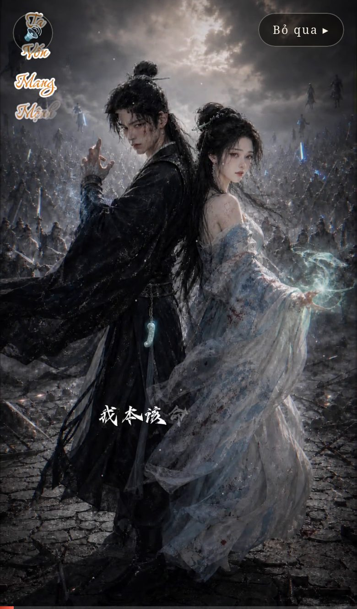
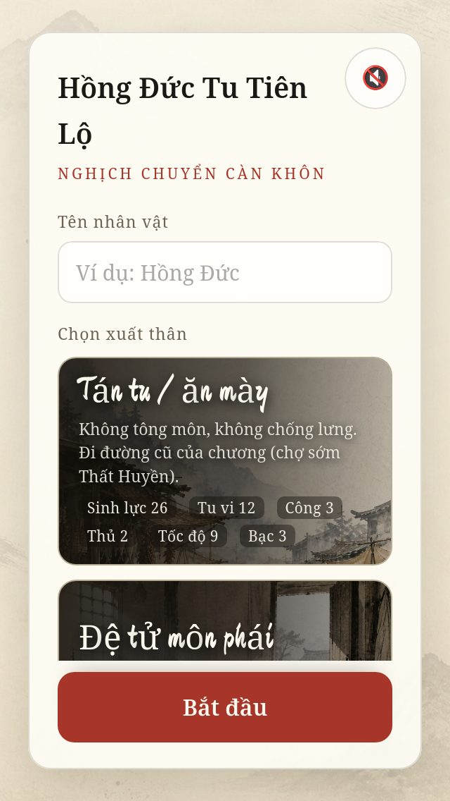
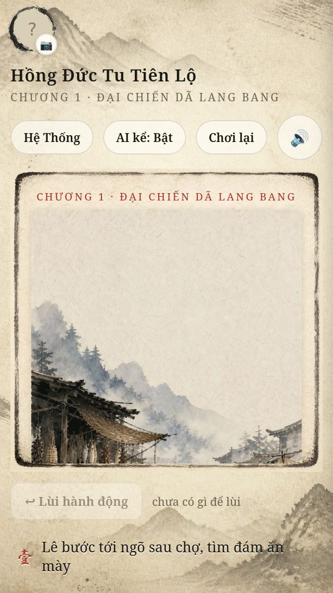

Game có tiếng rồi
Tầng 1 · bản chạy thật · đo bằng Safari (WebKit) trên iPhone 13 và iPhone SE
Trước đây game im ru hoàn toàn. Giờ có bốn tiếng ngắn, có nút tắt, và mọi thứ đã đo bằng
tín hiệu âm thanh thật chứ không phải chỉ "không báo lỗi".
Mở game để nghe thử
Bốn tiếng, và khi nào kêu
| Tiếng | Kêu khi nào | Đo được |
|---|
| Tách | Bấm một dòng hành động | 0.149 |
| Lật giấy | Truyện sang trang mới | 0.078 |
| Trầm xuống | Lùi hành động | 0.122 |
| Mở bảng | Hệ Thống, Bắt đầu, Chơi lại | 0.111 |
Số là mức đỉnh đo bằng cách render lại tiếng trong trình duyệt.
Mức 1.0 là to nhất mà loa đọc được, vượt qua là rè.
Không thêm một file âm thanh nào. Cả bốn tiếng được dựng ngay trong máy bằng Web Audio,
nên không tải thêm gì, không nặng thêm, không vướng bản quyền. Mở game trên mạng yếu vẫn có tiếng.
Tắt tiếng ở đâu cũng được
Nút loa nằm ở ba chỗ, vì ba chỗ đó người chơi ở lâu nhất:
- Trên thanh trên — lúc đang chơi.
- Trên phim mở đầu — lúc phim đang chạy, chính là lúc ồn nhất.
- Trong thẻ tạo nhân vật — lúc đang chọn xuất thân.

Nút loa nổi ở góc trên trái phim mở đầu. Bấm là phim im ngay,
và trạng thái được nhớ cho lần chơi sau.
Trong thẻ tạo nhân vật: nút loa ở góc trên phải, đang bật (🔊).

Bấm một cái là tắt (🔇). Lựa chọn này được nhớ, tải lại trang vẫn tắt.
Màn hẹp nhất vẫn vừa
Thêm nút thứ tư vào thanh trên là chỗ dễ làm vỡ bố cục nhất. Đã đo trên iPhone SE
(rộng 320 điểm) — máy hẹp nhất còn dùng được:

Bốn nút vừa một hàng trên màn 320 điểm, không nút nào đè nút nào,
không tràn ngang. Nút loa giữ vùng chạm 44×44 điểm cho dễ bấm.
| Máy | Rộng | Nút loa | Chồng nút | Tràn ngang |
|---|
| iPhone SE | 320 | 44×44 | không | không |
| iPhone 13 | 390 | 44×44 | không | không |
| iPad Pro 11 | 834 | 44×44 | không | không |
Ba lỗi tìm ra trong lúc làm, đã sửa
Làm xong thì nghe được, nhưng đo tín hiệu mới thấy sai. Ghi lại đây vì đều là lỗi thật:
1. Tiếng bị nhân đôi. Tín hiệu đi hai đường cùng lúc nên đỉnh đo được là
1.45, vượt mức 1.0 — tai nghe thành tiếng "bụp". Đã nối lại thành một đường.
2. Tiếng lật giấy to gấp bảy lần. Phần nhiễu đi vòng qua bộ điều âm lượng nên đỉnh
0.544 trong khi đặt ra chỉ 0.075. Đã cho đi qua bộ điều âm lượng: còn
0.078, đúng như đặt.
3. Bấm nhanh thì rè. Bấm 10 lần sát nhau, tiếng chồng lên nhau, đỉnh
1.485. Đã thêm bộ nén trước loa: bấm 20 lần sát nhau vẫn chỉ
0.732, không rè.
4. Nút loa bị che ở hai màn. Ở phim mở đầu và màn tạo nhân vật, thanh trên bị lớp phủ
che nên không nút nào bấm được — kể cả ba nút cũ. Đây là lỗi có sẵn từ trước, không phải
do lần này. Đã đặt thêm nút loa nổi ngay trên hai màn đó.
Đã kiểm những gì
| Có tiếng thật | có — đo tín hiệu, không chỉ nghe |
| Tắt là im hẳn | đúng — đo lại được 0 tín hiệu |
| Nhớ lựa chọn sau khi tải lại | đúng, cả bật và tắt |
| Chơi thật 4 lượt + mở Hệ Thống + đổi tab + lùi | không lỗi JS |
| Bộ test cũ | 161 đạt · 124 đạt |
| Hai bản (máy chủ và tĩnh) | khớp nhau từng dòng |
Còn phải nói thật một điều: trình duyệt giả lập trên máy tính không mô phỏng đúng
luật chặn tự phát tiếng của iPhone. Nên tôi làm theo cách chắc chắn: tiếng chỉ mở khóa ở
cú chạm đầu tiên, không dựa vào tự phát. Trên máy thật anh mở lên bấm "Vào game" là có tiếng.
Chơi thử